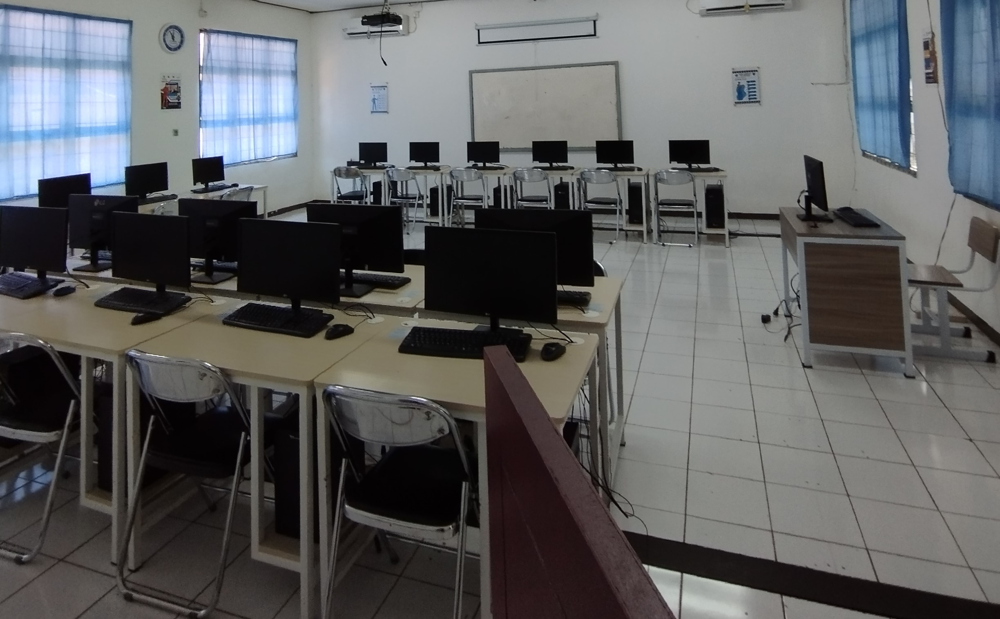
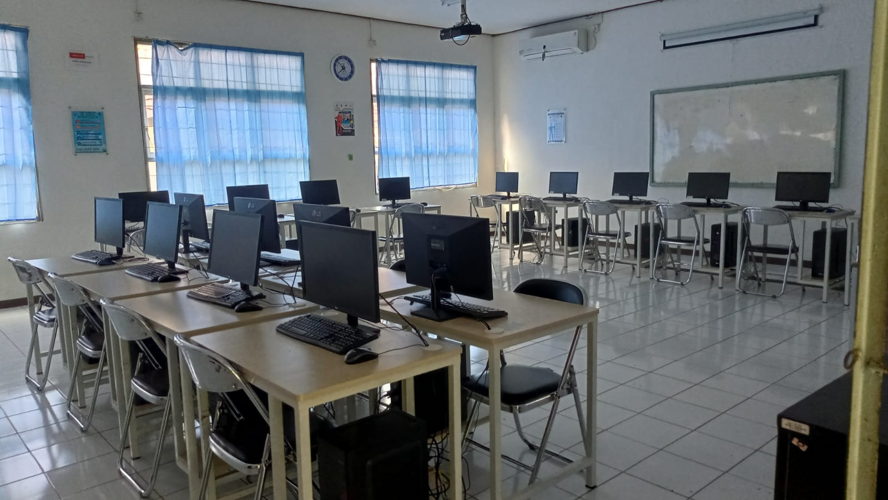
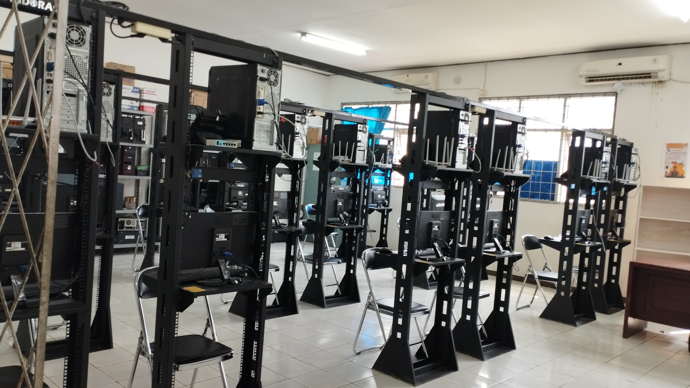
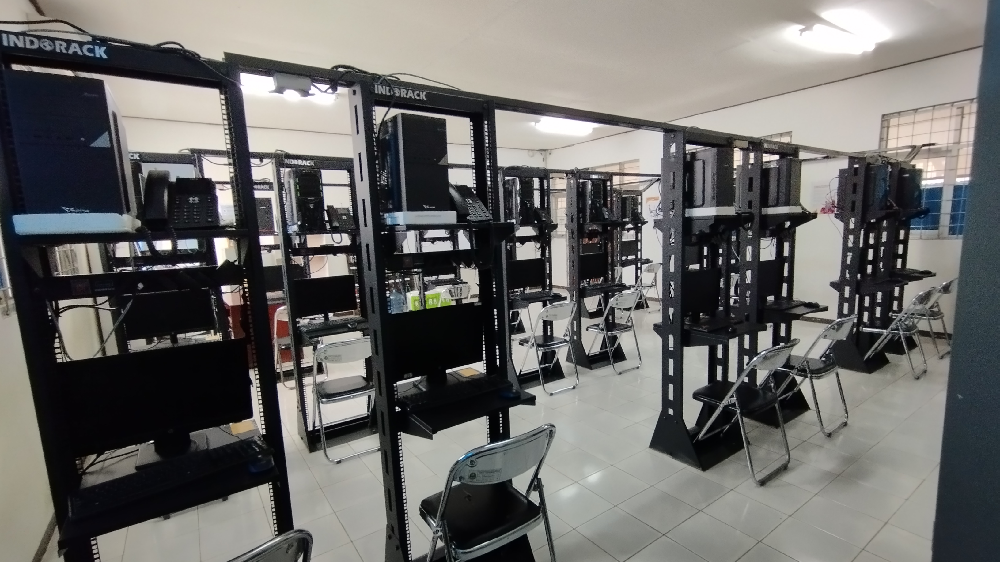

Profile Jurusan

TJKT SMKN 1 GUNUNG SINDUR
Teknik Jaringan Komputer dan Telekomunikasi (TJKT) merupakan salah satu program keahlian di Smkn 1 Gunung Sindur. Jurusan ini membekali peserta didik dengan keterampilan, pengetahuan, karakter yang disiplin, bersih, dan religius. Dijurusan ini kita mempelajari ilmu komputer, perakitan komputer, penginstalan software dan sistem operasi, Administrasi Server & Jaringan, ilmu telekomunikasi, konsep jaringan, konfigurasi jaringan LAN (Local Area Network), WAN (Wide Area Network), MAN (Metropolitan Area Network).
Visi : menjadi kompetensi keahlian yang bisa menghasilkan
lulusan yang memiliki kompetensi yang unggul di bidang teknik jaring komputer dan Telekomunikasi, Mandiri,
disiplin, bersih, bertanggung jawab, dan berjiwa wirausaha yang dilandasi keimanan dan ketakwaan kepada
Tuhan Yang Maha Esa.
Misi : menumbuhkan dan mempertebal keimanan kepada Tuhan Yang
Maha Esa melalui kegiatan kerohanian, menumbuhkan disiplin, bersih, dan tanggung jawab. Peserta didik pada
kegiatan pembelajaran menguasai keterampilan di bidang perangkat keras dan perangkat lunak jaringan
komputer mampu dengan Mandiri maupun kelompok untuk menghasilkan sebuah karya yang berkaitan dengan
kompetensi keahlian teknik jaringan komputer dan Telekomunikasi.
Teknik Komputer Jaringan (TKJ) ini berdiri pada tahun 2011 dan memiliki 2 rombongan belajar (rombel), dari awal pembelajaran dahulunya menggunakan kurikum ktsp, lalu pada 2015 diganti menjadi kurikum K-13, dan ditahun 2022 diganti kembali menggunakan kurikulum Merdeka, dan pada tahun 2022 juga jurusan TKJ ini mengganti nama menjadi Teknik Jaringan Komputer dan Telekomunikasi. Saat ini Jurusan TJKT memiliki 9 kelas, yang terdiri dari 3 rombel kelas X, 3 rombel kelas XI dan 3 Rombel kelas XII. Kompetensi TJKT memiliki 7 guru pengajar untuk mata pelajaran produktif.
Sarana Prasarana
Ruang Laboratorium Teknik Jaringan Komputer & Telekomunikasi
Berikut ini adalah salah satu sarana dan Prasarana yang dimiliki Smkn 1 Gunung Sindur khususnya untuk
Jurusan Teknik Jaringan Komputer dan Telekomunikasi.
Laboratorium Teknik Jaringan Komputer dan Telekomunikasi di sekolah ini memiliki 2 Lab., yaitu Lab.
Hardware (Pintu Sebelah Kiri) dan Lab. Software (Pintu Sebelah Kanan) pada gambar.
LAB. SOFTWARE
 Ini merupakan lab software TJKT di dalam sini dikhususkan untuk mempelajari tentang
Software(Perangkat Lunak) seperti pembelajaran Design Grafis, Pemograman, Administrasi Server, Dll.
Di dalam lab ini dilengkapi dengan 18 PC dan 2 AC.
LAB. HARDWARE
 Ini merupakan Lab Hardware TJKT didalam lab ini sudah dilengkapi dengan 18 pc dan alat alat untuk melakukan instalasi jaringan/Administrasi Jaringan seperti Acces Point, Router, Switch, Dan Alat Telephon Fanvil
Alat - Alat Pembelajaran
Berikut ini merupakan Alat alat yang dimiliki sekolah SMKN 1 Gunung Sindur khusunya jurusan Teknik Jaringan Komputer dan Telekomunikasi yang dapat mendukung pembelajaran di jurusan ini.

Server PBX Yeastar
Kami juga memeiliki Sebuah server PBX khusus untuk menjadi server dari alat telepon fanvil kami, server PBX yang kami miliki adalah Yeastar s50

Access Point Tp-Link
Access point disini kami menggunakan brand Tp-Link dengan beberapa seri, yaitu Tlwr,